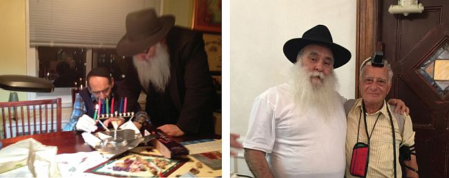

French Outreach in the Heart of Manhattan
He works in New York with French-speakers. He was born in Morocco, moved to France, and then found himself in the heart of the business district of Manhattan. * Today he coordinates activities among French-speakers in the greater metropolitan area and is a regular guest in the offices of French government officials in the U.S.* The work of Rabbi Michoel and Esther Cohen.

By Nosson Avrohom
“One day, I got a call from one of the advisers to a very senior Jewish, French politician, who told me that his opponents had accused him of a crime and he was facing a possible prison sentence,” said Rabbi Michoel Cohen, shliach for French-speaking Jews in New York. “The adviser told me about his poor state of mind and asked that I visit and cheer him up.
“The senior politician was under house arrest and was instructed not to leave his hotel room. Although there were police guarding the place, I got permission to enter. Before I went, I wrote to the Rebbe and asked for a bracha that I be successful in my shlichus.
“The Rebbe’s answer in the Igros Kodesh was that when a Jew is in distress he needs to put on tefillin and tzitzis.
“I took tefillin with me but, sorry to say, I did not take a tallis. My own tallis had been through a number of farbrengens and wasn’t the cleanest and I didn’t think it would be appropriate to take it in that condition.
“When I got to the hotel, I soon realized how sensitive the situation was. American police and French security were circulating there. Since I had been given prior permission, I was one of the few allowed to go in. As soon as he saw me, his face lit up and he welcomed me warmly.
“‘How will I get out of this mess?’ he asked me right away. I encouraged him and gave him a pair of candlesticks and a Chitas for his wife and a T’hillim for him. I explained the importance of reciting T’hillim for someone in trouble. Before we said goodbye, I told him about the answer that I opened to before I went to meet him and said I would be pleased if he agreed to put on tefillin. He happily agreed and rolled up his sleeve.
“When he realized I was about to put tefillin on him and that I did not have a tallis, he surprised me when he asked, ‘Rabbi Cohen, why without a tallis?’ I was flabbergasted. I was ashamed that I hadn’t fully carried out the Rebbe’s instructions. Without further ado, he went to the bedroom and came back with a big tallis, to my amazement.
“He put on the tallis and tefillin and then we said goodbye. Just a week went by and although all the journalists and media people were convinced of his guilt, the court announced that he was innocent and that there was no evidence for the crime for which he had been arrested. I saw a fantastic miracle that happened as a result of the Rebbe’s bracha. It should be mentioned that this man has many merits; in past years, he was a big help to shluchim and was the first to allow a Lag B’Omer parade.”
FROM MOROCCO TO FRANCE AND THEN NEW YORK
Rabbi Michoel and Esther Cohen have been working with French-speaking Jews in New York for over twenty years. Over the years, he was able to forge strong connections with members of the French consulate and embassy. He operates a cycle of weekly shiurim and Shabbos meals in Manhattan that are attended by hundreds of students and young French-speaking Jews. Rabbi Cohen runs an extensive outreach operation that has become well known among French-speaking Jews.
R’ Cohen was born in Oujda in Morocco. His family was close with the Rebbe’s shluchim to that country, Rabbis Raskin, Eidelman, and Matusof. When his family moved to Paris, the connection with Chabad continued through Rabbi Shmuel Azimov.
“I remember a farbrengen that was a turning-point for me. R’ Azimov really inundated us with Chassidus, and the awareness that I needed to change and go from being a mekurav to a Chassid and mekushar became heightened.”
R’ Cohen changed his way of dress and went to learn in Chabad. In his youth, he visited 770 several times and together with his friends they would stand on benches in order to see the Rebbe’s holy face. There is a moment that he will never forget. It was on Simchas Torah 5746. “We returned early from Tahalucha, and around eleven o’clock at night the Rebbe said a sicha in which he spoke about the midda of bittul and the cup that can be filled through bittul.
“The Rebbe then began motioning to Chassidim to fill up cups and drink them down. The Rebbe turned to me too and motioned that I should drink a full cup. I felt that I received strength for life from the Rebbe at that moment.”
After marrying his wife Esther, they settled in Crown Heights with the desire to be close to the Rebbe. They began their shlichus 27 years ago as a young couple. “French boys and girls would come to Crown Heights, sent by the shluchim in France. Every week we were asked to host guests in our home and for Shabbos meals.”
SOUL ENCOUNTERS
R’ Cohen’s operations today cover a wide and varied range, but when he first started out, he put his energy into hosting Shabbos and Yom Tov meals. Today too, the Shabbos meals are a key element in the work of the Chabad House for French Speakers. Many people have come close to the path of Torah and mitzvos because of those meals.
“In our first year of outreach, a young French girl living in Eretz Yisroel, who worked as a singer in the Israeli opera, called us. She had a number of scheduled performances in New York and although she wasn’t religious, she wanted to live among Jews while in New York. That is how she came to us. She called before Rosh Hashana and asked whether we could find her a place in the neighborhood for the next month, and we happily arranged this for her. She would come to us for all the Shabbos and Yom Tov meals, and she met other young men and women her age who were our guests.
“At a certain point, she said she had been sure that someone would comment to her about her immodest dress or even harass her, and she was surprised this did not happen. Instead, she was welcomed with tremendous love and extraordinary hospitality.
“This girl began attending shiurim in 770 in her free time. She also learned a lot from my wife and was surprised by the great depth in Torah. Before her flight back, she wanted to thank us and said she learned many things that would stay with her all her life, but unfortunately, because of her work, she would not be able to change her entire way of life, since most of her performances were on Shabbos.
“A few years went by and one day, at the end of Shacharis in 770, a bachur came over to me. I asked him who he was and he said that I don’t know him but I know his kalla, whom he was marrying in a few weeks, quite well. He said her name, Alexandra. I was shocked. Apparently, she had returned to Eretz Yisroel and what she had heard by us and in 770 continued echoing in her head, until she decided to make a major change in her life. In the end, she became a Lubavitcher Chassida and she has a beautiful Lubavitcher family today. That was a very moving moment for me.”
R’ Cohen emphasized in our conversation how we can never anticipate the change that one Shabbos meal can accomplish. “Some years ago, I was at the Kinus HaShluchim when someone came over to me, with a hat and beard, and asked, ‘Do you know who I am?’ I admitted that I couldn’t remember; we have hundreds of guests a year, so how can I remember them all? ‘Four years ago,’ he said, ‘150 of us students stayed at your Chabad House. I was so inspired that when I returned to France I decided to do teshuva.’”
R’ Cohen has another moving story. “There was a French-speaking student from Canada, an engineer, who began taking an interest in Chabad and came to 770. He came with lots of faith and ‘oros’ without finding out in advance where he would be staying. I happened to meet him and hosted him. He yearned to learn Chassidus; he was thirsty for knowledge and we learned many maamarim and sichos together. Purim time, he joined me on mivtzaim. We were out from eight in the morning until the evening.
“We read the Megilla in eight different places and I lost my voice. At the end of the day, we sat down to eat the Purim meal. He was enthusiastic and said, ‘Now I understand why a Jew is different than a goy. This is the first time in my life that I feel the fabulous feeling of being a Jew.’ After Purim, he flew to visit his family in France where he became friendly with several shluchim and went to learn in a Chabad yeshiva. Today he is a Lubavitcher, a shliach, who is doing great work in being mekarev many young people to their Creator.”
MAKING WAVES
In the early years of their shlichus, the guests would stay in the Cohens’ home until they ran out of space. “Every Shabbos, we had 50-60 guests, and when large groups wanted to come, we had to sadly say no. We realized that sooner or later we would have to have access to a bigger place but the question, of course, was money. We wrote to the Rebbe through the Igros Kodesh and asked for a bracha. The answer had to do with the special quality of Pesach and the Rebbe wished that after the holiday, we would sense a significant improvement in what we were asking for.
“We anticipated salvation and the unbelievable occurred. A group of 150 Jewish students, who had come to Manhattan, called us. They heard about us and wanted a Chassidic Shabbos experience. I remembered that there was a shul not far from the hotel where they were staying, where there was someone with whom I had previously had a conversation about the possibility of working together. I called the gabbai who referred me to the person in charge of the catering hall, who was excited by my request. He made an offer we couldn’t refuse, to come every Shabbos, not just that Shabbos!”
R’ Cohen was excited by the fulfillment of the Rebbe’s bracha. Since then, Shabbos meals take place in that shul’s catering hall in Manhattan. Thanks to that, he has also developed closer cooperation with shluchim who operate in the area. The spacious hall and the excellent location doubled and tripled the number of Shabbos guests. R’ Cohen speaks about Shabbasos with 200 guests and more.
What is special about these Shabbos meals that their reputation has spread far and wide?
“We have good food; that’s a very important factor. In addition to the food, there is tremendous simcha, niggunim, singing and plenty of liquor. Every Shabbos we experience incredible divine providence. We encounter instances in which people who did not see one another in many years, meet by us. I tell stories of Chassidim and deliver readily understandable and short divrei Torah during the meal. What makes us happiest is when we hear of couples who met by us. We have already attended many weddings that were initiated here.”
THE REBBE PLOWS; THE SHLUCHIM HARVEST
One of the most amazing phenomena that R’ Cohen spoke about is knowing how far the Rebbe has penetrated the world and reached places that shluchim would take years to reach. “I meet countless Jews whom I’m sure that I am introducing the Rebbe to their lives, and then it turns out that they were born because of his blessing.
“One time, we had a student come to us for Shabbos and she was very enthused, despite having grown up in a home that was very far from Torah and mitzva observance. When she became a steady guest, my wife began to talk to her about the Rebbe, but she had no idea who the Rebbe is. At a certain point, my wife showed her a picture of the Rebbe and the girl said it was the first time she was seeing his picture, which we thought was most surprising. It is hard to meet Jews from France who haven’t been exposed to the Rebbe or the work of Chabad.
“After a few months, she called my wife and told her that her mother was coming from France to visit her and she wanted to visit the Rebbe’s beis midrash. Afterward, we learned that her mother wanted to come to say thank you to the Rebbe, for in the merit of his blessing many years before, this daughter was born, the only one in her family.”
According to R’ Cohen, these stories emphasize the deep groundwork the Rebbe has laid in the world, so that the work of shlichus today consists only of harvesting.
“We had a student who came regularly for Shabbos meals and other programs. One Shabbos, an older couple accompanied this student and we were sure they were his grandparents. During the meal, the man got up and said he wanted to say something. He wanted to say thank you to the Lubavitcher Rebbe.
“‘You know my son, perhaps by a different name,’ he began, ‘but the name he was given at his bris was Menachem Mendel.’ He said that for many years he was a businessman and he would go to New York on business. Sadly, he and his wife had no children. All the doctors they went to could not help them. One day, he heard about the Rebbe’s blessings and on his next visit to New York, he went to 770.
“He didn’t know how things work and when he made inquiries, the bachurim told him he should wait because the Rebbe would be coming back soon from the Ohel. When the Rebbe arrived and began walking toward the entrance, the man was astounded by the Rebbe’s appearance and couldn’t utter a word. The Rebbe went over to him and blessed him. Nine months later, his wife gave birth to their only son.”
WITH FRENCH AMBASSADORS AND DIPLOMATS
Among his many involvements, R’ Cohen is also a regular guest at the French embassy and consulate in New York. When a high-level guest arrives from France on a visit to New York, including presidents and important ministers, he is called upon to join their entourage. In his work in dealing with the French Foreign Ministry, not much can be made public, but what can be told is the Chanuka lighting event that takes place every year in the events auditorium of the embassy. It is attended by the ambassador and the entire embassy staff, as well as leaders of other Jewish organizations of standing.
“The connection with the consulate developed as a result of the holiday of Chanuka. When the Americans, led by President George Bush, launched their attack in Iraq, they enlisted other countries to join them. France refrained, as a result of which the White House ostracized them, and other US government agencies also refused to cooperate with the French embassy. The same happened with other non-governmental organizations, who followed the policy coming out of Washington, and cut ties. I thought that this was a mistake, and I made contact with the then ambassador and his office staff, and since then we are in touch.”
R’ Cohen does not suffice with official events but works with all members of the embassy; he spreads awareness of the Seven Noahide Laws among the non-Jews, and with the Jews, he strengthens Jewish tradition. “There was an older man who worked at the consulate whom I would visit regularly. I would put tefillin on with him and we would learn Chumash and the Rebbe’s sichos together. One day, he mentioned to me that his family did cremation, not burial.
“Obviously, I made sure to enlighten him as to how this was a terrible mistake. We arranged that if he felt that his health was deteriorating, that he would call me. One day, I got a call from him and he told me his health was precarious and he was going to the hospital. I called the chevra kadisha and together we had him sign a document which said I am responsible for his burial. A few days later, he died, and we made sure he had a Jewish burial. I was happy I got to know him in time.”
R’ Cohen also uses his connections at the consulate to help Lubavitcher families. “Getting a visa from the French consulate is a protracted process. When there were problems with T’mimim who went to learn in the yeshiva in Brunoy, we arranged visas for them in one day. We have also helped families who came from France and now live in New York.”
The people at the embassy clearly demonstrate their appreciation for R’ Cohen and his work and are even helped by his services. “In France, elections for president always take place on a Sunday. Those who live outside of France have to go to the embassy on Saturday. Since religious Jews cannot vote on Shabbos, we came up with a solution in which voters can send in their vote via email on Erev Shabbos. In the past decade, I met with President Sarkozy and President Hollande. I spoke with them and their entourages about the importance of the Seven Noahide Laws.”
THE FRENCH ARE READY FOR MOSHIACH
Recent statistics show high rates of assimilation among diaspora Jewish youth. How do you deal with this?
A few years ago, a student called me and asked whether he could bring his gentile girlfriend to the Shabbos meal. I told him he could bring her. When they came, I spoke candidly about the importance of the Jewish people and the prohibition of assimilation. I spiced what I said with chilling stories and spared no words about those who cut off their children. They were stunned and began to quietly protest to those around them.
When I finished, I called him over and lit into him harshly. He was very angry, but I told him that while Hitler killed the body, he was killing the soul. I spoke firmly about the chain of the Jewish people since Yaakov Avinu and how he was undermining it.
The fellow got up and left with his girlfriend. I didn’t know whether what I had said affected him. At a certain point, I thought maybe I had gone too far and hadn’t done the right thing. A week went by and I got an email from him. “Rabbi Cohen, I have left the non-Jewish woman. Your honesty on Shabbos affected me.” He later met a Jewish girl and I was invited to their wedding.
What about publicizing about Moshiach? In your work, do you see how the world is ready for Moshiach?
Today, it is clear to all that the Rebbe is Moshiach. I have a French friend, not a Lubavitcher, who is always telling me, “A Chabadnik who does not understand that the Rebbe is Moshiach is blinding himself and refusing to see the reality as it is,” and this is said by someone who has not learned all the sichos and maamarim.
In recent years there has been a great awakening among Jewish youth from France to connect to the Rebbe, much more than in years gone by. Every French Jew who comes to New York, and it makes no difference what his level of religiosity is, will at some point on his trip pay a visit to Beis Chayeinu.
We work with kiruv organizations that are not Lubavitch, who send us young people who were niskarev by them, for Shabbos meals and yemei iyun. Each one of them wants to first go to 770. There was a group sent to us by a Litvishe organization in France. Obviously, their itinerary did not include going to the Rebbe, but the youth told their counselors that they were going to visit relatives and they went to 770. The French live Rebbe and Moshiach as simple reality!
I’ll tell you an amazing story. A decade ago, a group of young people came to us from the organization HaTzofim. During their stay, they each wrote to the Rebbe and asked for a bracha through the Igros Kodesh. There were miracles and clear answers. A few months later, we got an email from one of the girls. She said she had asked for a bracha for her uncle, that he should find his bashert. The Rebbe’s answer was that he should be particular to observe Shabbos and kashrus. Upon her return to France, she told him about this and urged him to do it. Now, she told me, she was just coming from his engagement party.
TECHNOLOGY IN THE SERVICE OF HOLINESS
In his work, Rabbi Cohen makes use of technology to spread the wellsprings. If you enter a search into google using any number of variations of Judaism and French-speakers, you will find his website. Due to the brief visits that some of the students make to New York, he keeps in touch with them via skype and gives shiurim in Chassidus that way too.
Three years ago, when there was a whole to-do about wearing a kippa in France, Rabbi Cohen launched a project that generated a lot of buzz: “The Kippa Challenge.” The challenge was to Jews and non-Jews alike, to take pictures of themselves wearing a kippa in public, to express their opposition to anti-Semitism. In a picture that he made public, you see Rabbi Cohen with the deputy consul of France in New York, with both wearing a kippa, as a way of identifying with the Jews of France.
In order to ramp up Mivtza Tefillin, Rabbi Cohen uses modern technology. Many of his mekuravim own tefillin but don’t use them regularly. Sometimes, Rabbi Cohen is unable to make his tefillin rounds, so he contacts his mekuravim via skype and guides them in how to put on tefillin, from “hareini mekabel” to “ach tzaddikim.”
Nosson Avrohom. "French Outreach in the Heart of Manhattan." Beis Moshiach, no. 1101 (January 9, 2018).